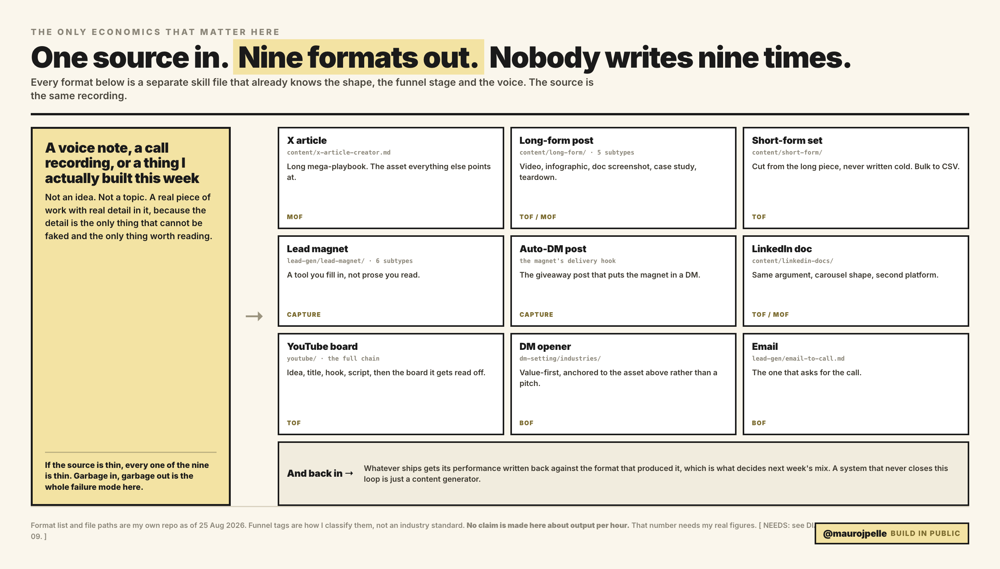
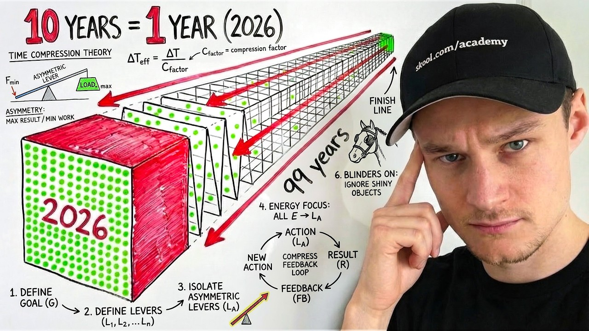
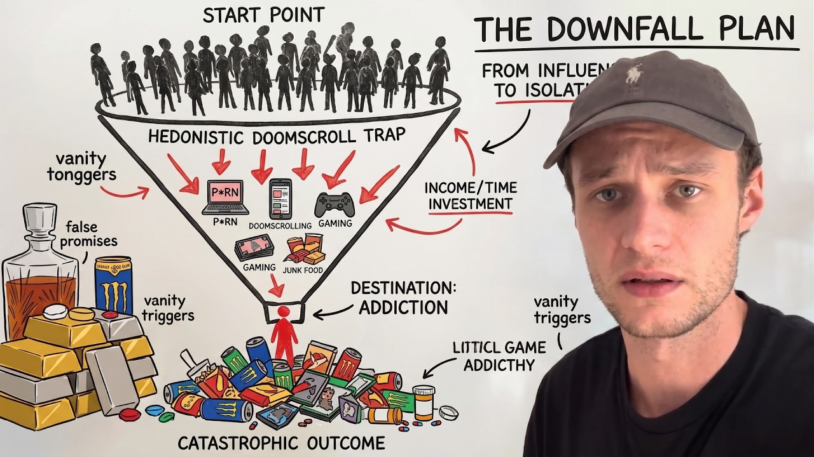
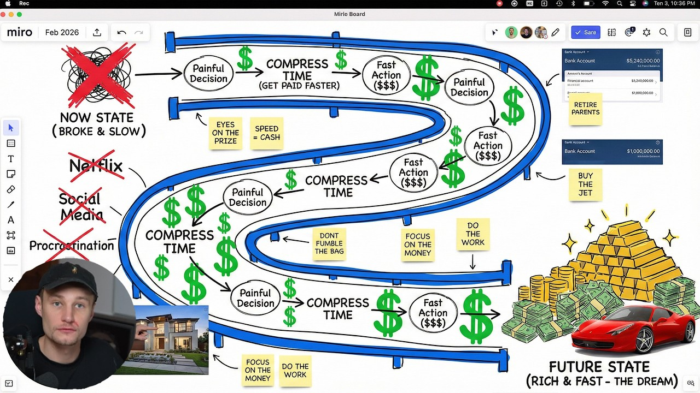

Video 03 · AI content systems that book calls
I stopped reading scripts on camera. I record off a board.
How a board gets built in about two hours, and what broke when the build moved to an API.
Mauro · @maurojpelle
HOOK0:00 · cold open + today we'll go over
When you read a script on camera, people hear you reading. I build a board from the script and talk off it, and you are looking at one right now.
ON SCREEN
This page scrolled top to bottom at recording speed. Then a five-second clip of me reading a scripted line [SCREEN: record it].
Today we'll go over
01What a board is
02The record-ready standard
03Four hours down to two
04The four-step build
05Eight files, one order
06The 200-item ceiling
07The batch that failed silently
08Why stickies drift
09Diagrams written as code
10A 310k channel runs this format
11How corrections come back
SAY
Let the viewer notice they're watching a board while you say this.
BEAT 01same line, said twice
Watch the same line read from a script, then said off a board.
SCREENTake 1: read the paragraph from a script, eyes on the text.
SCREENTake 2: say the same point off three labels on the board.
SAY
Cut the two takes back to back. Say nothing about which is better. Let the difference land.
BEAT 02what a board is
One column. One beat per point. Ten to sixteen beats for an eight-minute video.
SAY
The board gets built from the script. It never replaces it. Each beat is one frame on screen.
Title + hook
Beat 01 · talking point
Beat 02 · chart
Beat 03 · diagram
Beat 04 · screen
Beat 05 · flow
...
Beat 12
Recap
CTA
spec: skills/youtube/miro-design-system.md
BEAT 03record-ready
Record-ready means nothing is missing and nothing needs a fix while the camera runs.
brand/claims.md, 'The video board system, as written up 2026-09-16'
SAY
The board gate is fifteen checks, and it asks one question: can this be read to camera without stopping. Roughly half run as a script, the rest need eyes.
BEAT 04the time
A board took 4 hours by hand. It is close to 2 now.
standing
4 boards a week
that's why the two hours matter
brand/claims.md: 'A board took 4 hours by hand and is close to 2 hours now' · 'Four boards a week, standing'
SAY
Say 'close to two', the way it's written. Four boards a week is the standing target.
BEAT 05the build
Four steps, and only the last one touches the board.
1
Beatssplit the script, no merging→
2
Componentsa form + colour per beat→
3
Geometryevery coordinate computed→
4
Writethe only step on the boardbrand/claims.md, 'The build is four steps, beats then components then geometry then write'
SAY
Check the beat count against the target runtime first. Text, diagrams and pasted media: real captures only.
BEAT 06eight files, one order
Eight files, read in the same order every time.
1
master→
2
visual→
3
archetype→
4
writing→
5
gotchas→
6
assets→
7
diagram→
8
QAbrand/claims.md, 'Eight files, read in the same order every time'
SAY
The order is dependency. Font size got corrected three times before it stuck.
BEAT 07the ceiling
Past 200 items you can't edit or delete through the API.
brand/claims.md: confirmed 2026-08-04 · 'A real board runs 200 to 400 items'
SAY
The edit call parses the whole board and gives up past 200. Create still works, so you get one shot, and every coordinate has to be right before you send it.
BEAT 08the silent failure
One create call: 37 items in, 17 created, and one error for the other 20.
the error named no item and no attribute
the response showed URLs for items never created
two attribute values, neither documented as invalid
brand/claims.md, 2026-08-03
SAY
That's why a batch is small whenever a line uses a value I have not written before. [NEEDS: Mauro's verdict on the rect-for-narration substitution before this beat is recorded]
BEAT 09why stickies drift
A sticky grows to fit its text, so a fixed row pitch drifts.
brand/claims.md: 'A fixed row pitch computed in advance drifts when a sticky grows'
SAY
Shapes take an explicit width and height. A sticky takes one or the other. So every height and every gap gets computed up front.
BEAT 10diagrams written as code
Diagrams get written in HTML, rendered, and pasted in as images.
HTML
→
Headless Chrome at 2x
→
PNG on the board
SAY
Hand-placing a diagram and prompting an image model for one are both banned. That's the default since 25 August.

content/boards/content-system-video/DIAG-03-one-source.png · rule: brand/claims.md
BEAT 11the format, at scale
A 310k channel runs this exact format in three of its top ten videos.



research/charlie-morgan/charlie-morgan-dig.md, thumbnails 4, 6, 7 · fetched 2026-07-16, views as scraped
SAY
Charlie Morgan: a hand-drawn whiteboard or a live Miro board, narrated with a facecam in the corner. Board plus facecam is a proven format at scale.
BEAT 12how corrections come back
Corrections come back as one-word comments on the board.
One-word commenton the item
→
Fix passpasted media never deleted
→
Readiness checkminimum image share
→
Record
SAY
A lane can't ship as a wall of text, because the readiness check counts the images.
BEAT 13recap + CTA
Build the board from the script, then talk off it. That's the whole system.
IF YOU RUN AN ESTABLISHED AGENCY
DM me on X and I'll show you how the board build runs inside a content system.
[CTA: confirm the current offer and link with Mauro before recording]
SAY
Recap in two sentences, then the qualified CTA.